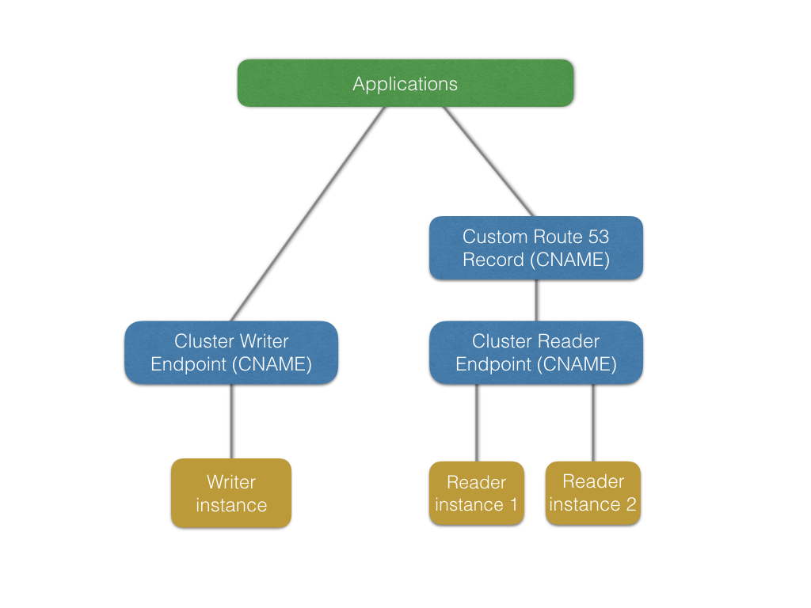
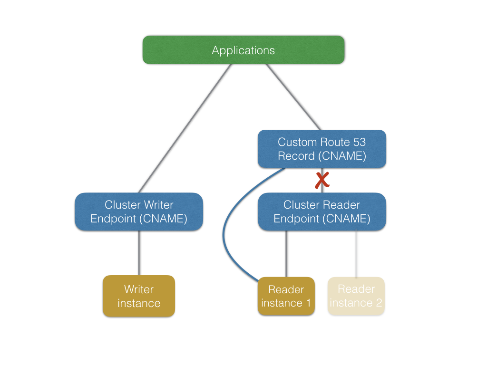
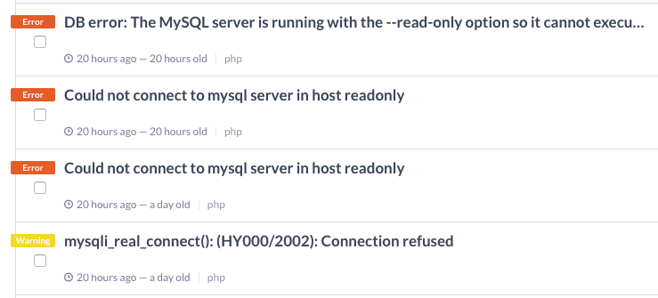

<- Volver al listado
Un fracaso y un éxito en Ticketea: Escalando Amazon Aurora en TicketeaEl Ticketing es un negocio donde los picos de tráfico extremos son la norma en lugar de la excepción. Para Ticketea esto significa que nuestro tráfico puede incrementarse en un factor de 60x en cuestión de segundos. Normalmente sucede cuando grandes eventos (que tienen una ‘fecha de inicio de venta’ fija y anunciada con anterioridad) salen a la venta.

La elasticidad del Cloud tiene límites, particularmente reaccionando a cambios súbitos y extremos en el ratio de peticiones entrantes. Este es el motivo por el cual, para determinadas situaciones, preferimos realizar un escalado planificado de la plataforma, seguido de un warm-up o calentamiento.
Por aportar contexto, nosotros alojamos nuestra infraestructura en AWS y somos “heavy users” de Amazon Aurora.
Para Ticketea, un evento grande normalmente se convierte en una oleada de tráfico, la cual afecta a los siguientes componentes:
- Frontales de aplicación sirviendo ticketea.com
- Servidores de API
- Tareas en segundo plano
- Bases de datos relacionales
Los primeros tres recursos son fáciles de escalar horizontalmente (añadir / quitar instancias de EC2). Simplemente tenemos que modificar sus grupos de autoescalado y AWS realizará la parte dura del trabajo por nosotros.
Las bases de datos relacionales son normalmente mucho mas difíciles de escalar. Pese que estamos usando un clúster de AWS Aurora con varias réplicas de lectura, escalar verticalmente el nodo de escritura es normalmente la parte difícil. Antes de detallarlo, hablemos un poco sobre AWS Aurora y cómo lo estamos usando.
Un cluster de Aurora es accesible a través de dos registros DNS:
- Un endpoint de escritura (registro DNS apuntando al nodo actualmente elegido como de escritura)
- Un endpoint de lectura (registro DNS que balancea las peticiones entre las instancias de lectura)

AWS Aurora sólo permite tener un nodo de escritura, y mediante el proceso de failover se promociona otro nodo a este rol. La elección del futuro nodo escritor se realiza empleando niveles (tiers en inglés). Un nivel es un valor de configuración que se establece en el momento de crear la instancia (y se puede cambiar a posteriori).
Cuando sucede un failover (bien de forma manual o tras un fallo del clúster) Aurora promocionará el nodo de lectura del nivel mas bajo al rol de escritor.
Como comentamos previamente, a veces necesitamos escalar el nodo de
escritura verticalmente. Para lograr este resultado, forzamos un
failover a una instancia más potente. Tradicionalmente realizábamos este
cambio cuando el tráfico estaba en el punto mas tranquilo del día, ya
que nos preocupaba el impacto que la operación pudiera tener en nuestros
usuarios.
Esta solución no funcionaba bien respecto al equipo técnico (suponía que
alguien tenía que levantarse pronto o quedarse despierto hasta tarde),
así que decidimos hacer pruebas para comprender cómo mejorar el failover
y los tiempos de recuperación del mismo.
El primer paso consistió en preparar un simple script que enviaba ráfagas de consultas al nodo de escritura. Durante su ejecución, realizaríamos un failover manual, punto en el cual comenzamos a ver que algunas de las consultas estaban bien, pero otras fallaban aleatoriamente. Los errores se mantuvieron durante una ventana de tiempo de 10-15 segundos. Repetimos la prueba varias veces, y los resultados fueron similares.
Decidimos investigar cómo estaban implementados los endpoints de Aurora tanto de escritura como de lectura. Ejecutando host en el registro DNS del endpoint de escritura (asumamos tkt-aurora-cluster.cluster-abcdefg.eu-west-1.rds.amazonaws.com) reveló que el endpoint es realmente un CNAME apuntando a la instancia de Aurora elegida como de escritura en ese momento.
$ host tkt-aurora-cluster.cluster-abcdefg.eu-west-1.rds.amazonaws.com
tkt-aurora-cluster.cluster-abcdefg.eu-west-1.rds.amazonaws.com is an alias for
tkt-aurora-1.abcdefg.eu-west-1.rds.amazonaws.com
tkt-aurora-1.abcdefg.eu-west-1.rds.amazonaws.com is an alias for ec2-12-123-12-12.eu-west-1.compute.amazonaws.com .
ec2-12-123-12-12.eu-west-1.compute.amazonaws.com has address 12.123.12.12
El endpoint de lectura funciona de forma similar, con la excepción de que está respaldado por un registro DNS Round-Robin apuntando por debajo a las diferentes instancias de base de datos.
Esto explica por qué nos encontrábamos errores durante la operación de failover: hay una ventana de tiempo relativamente larga (10-15 segundos) durante la cual el clúster está ajustándose a la nueva topología y los registros cambian para reflejarla. Como se puede intuir, la manipulación de registros DNS y su propagación no es una operación atómica, por tanto los errores.
Una vez recopilamos mas información con esta pequeña investigación, definimos cuatro procesos diferentes para escalar nuestra plataforma a la vez que minimizamos el impacto sobre nuestros usuarios. Veámoslos a continuación.
Añadir o quitar nodos de nuestro clúster de lectura para incrementar o decrementar acordemente la capacidad de lectura.
Escalar hacia fuera es realmente sencillo: Si usamos la Consola de AWS, podemos seleccionar el clúster y elegir la opción Create New Aurora Replica. En nuestro caso, una réplica nueva de lectura tarda alrededor de 7 minutos en estar lista, y esta operación no causa caida de servicio de ningún tipo. El nuevo nodo no se añadirá al endpoint DNS de lectura hasta estar totalmente listo.
Este escalado es un poco complejo. Si tenemos tres instancias de lectura, y decidimos apagar una de ellas, el round-robin DNS se propagará con un cierto retardo, resultando en parte del tráfico entregada a una instancia de base de datos muerta durante un periodo de tiempo determinado.
Debido a esto, decidimos usar un registro DNS adicional en Route53. Este registro DNS es el hostname al que las aplicaciones normalmente se conectan. Usualmente apunta al endpoint del cluster de lectura, excepto durante una operación de scale-in. En ese caso, temporalmente lo apuntamos a una instancia de base de datos de lectura específica, mientras el resto son eliminadas.

De esta forma tenemos control preciso sobre a qué nodo se enruta el tráfico de lectura, en lugar de depender de la propagación de DNS.
Como AWS Aurora no es de tipo multi-master, si necesitamos más capacidad de escritura tenemos que cambiar el tipo de instancia del nodo escritor. Esto significa que tenemos que cerar una nueva instancia de Aurora con mayor capacidad y promocionarla al rol de escritor.
Para tener mayor control sobre el proceso de escalado hacia arriba, normalmente creamos un nuevo nodo con mas capacidad (llamémosle new_master). Se le asignará el nivel 0, lo que significa que será el primer candidato para promocionar al rol de escritor. Como explicamos en la sección de escalado hacia fuera, este proceso toma alrededor de 7 minutos en nuestra base de datos principal.
Después de este paso, realizamos un failover manual en el clúster, que promocionará new_master a nodo escritor. A causa del retraso de propagación de DNS, es posible que se vean errores durante una ventana de tiempo de 10-15 segundos (pero nuestras aplicaciones son resilientes a estos errores, verdad? :p).

Este proceso es el inverso de escalar hacia arriba. Solamente modificamos nuestra instancia old_master para que tenga de nivel 0 y realizamos el failover del clúster. De nuevo, es posible ver algunos errores durante unos 10-15 segundos.
Los clusters de AWS Aurora se gestionan con registros CNAME que apuntan a instancias de bases de datos. Es importante entender cómo funcionan para ser capaces de minimizar el impacto de las operaciones de failover.
Disponer de un registro adicional de Route53 nos proporciona mayor control durante una operación de escalado hacia dentro, y no añade complejidad a la arquitectura.
Actualmente estamos realizando estos procesos manualmente, por lo que no estamos satisfechos al 100%. Tenemos algunas ideas, pero si teneis cualquier sugerencia, sentíos libres de dejar un comentario! Y, si por un casual resulta que estais interesados en temas de escalabilidad y alta disponibilidad, tened en cuenta que estamos contratando :-)